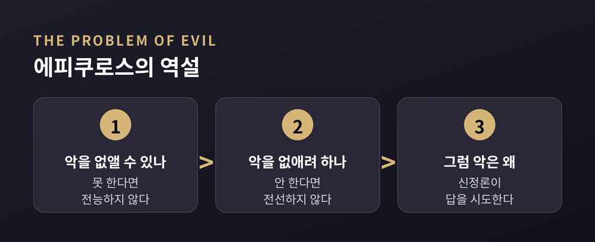
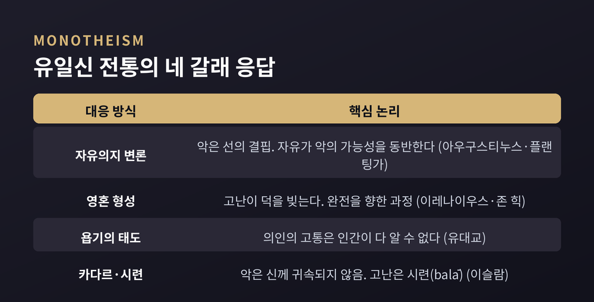
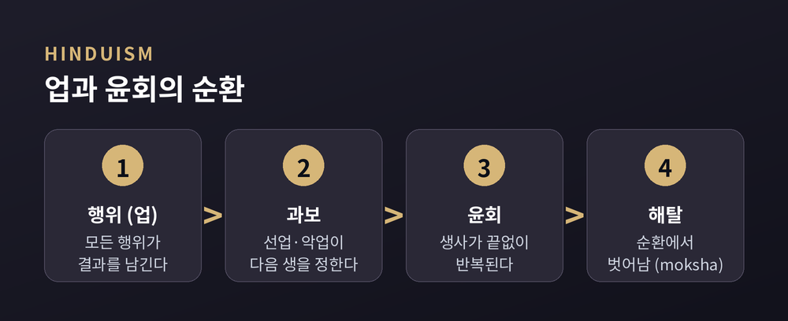
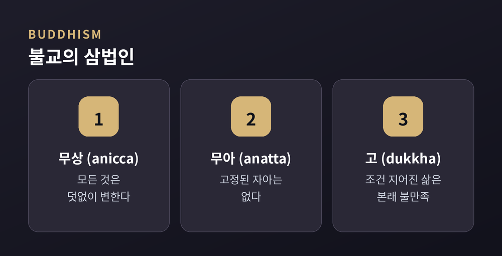
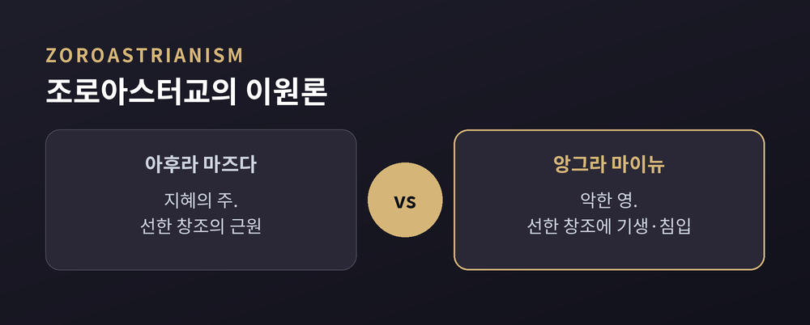

세계 종교는 고통과 악을 어떻게 설명할까 — 신정론·업·무상 비교
고통은 누구도 피해 가지 못합니다. 병, 재난, 까닭 없는 불행 앞에서 인간은 늘 같은 질문을 던져왔습니다. "왜 하필 나에게, 왜 이런 일이 일어나는가." 이번 글에서는 세계 종교가 이 물음에 어떤 답을 마련해 왔는지 비교종교의 눈으로 정리해 보겠습니다. 어느 쪽이 옳다고 판정하려는 글이 아닙니다. 서로 다른 문명이 같은 고통을 어떻게 다른 언어로 풀어냈는지 살펴보려는 것입니다.

악의 문제, 그리고 신정론이라는 말
먼저 용어부터 짚겠습니다. 악의 문제(problem of evil)란, 전능하고 전지하며 완전히 선한 신을 세상에 실재하는 악·고통과 어떻게 조화시킬 것인가라는 오래된 난제입니다.
가장 날카로운 정식화는 고대 그리스 철학자 에피쿠로스에게 돌려집니다. 논리는 간명합니다. 신이 악을 없애길 원하지만 없앨 수 없다면 전능하지 않습니다. 없앨 수 있는데 원하지 않는다면 전선(全善)하지 않습니다. 이른바 에피쿠로스의 역설입니다.
여기에 답하려는 시도를 신정론(theodicy)이라 부릅니다. '신(theos)'과 '정의(dikē)'를 합친 말로, 철학자 라이프니츠가 만들었습니다. 그는 신이 악을 만들지는 않되 더 큰 선을 위해 허용한다고 봤습니다. 우리가 사는 세계가 "가능한 모든 세계 중 최선"이라는 유명한 논리입니다.
악은 보통 둘로 나눕니다. 전쟁·잔혹처럼 인간의 선택에서 오는 도덕적 악, 그리고 지진·질병처럼 자연에서 오는 자연적 악입니다. 이 구분은 뒤에 나올 여러 전통의 답을 이해하는 열쇠가 됩니다.

유일신 전통의 네 갈래 응답
유대교·기독교·이슬람은 하나의 전능하고 선한 신을 믿기에, 악의 문제를 정면으로 마주합니다. 대응은 크게 네 갈래로 갈립니다.
첫째, 자유의지 변론입니다. 아우구스티누스는 악을 '선의 결핍(privation)'으로 봤습니다. 악은 독자적 실체가 아니라 선이 빠진 자리라는 것입니다. 그는 원래 완전했던 창조가 인간의 자유로운 선택, 곧 타락으로 훼손됐다고 설명합니다. 현대 철학자 플랜팅가는 이를 다듬어, 자유로운 존재가 늘 선만 택하는 세계는 신도 만들 수 없었다고 논증합니다.
둘째, 영혼 형성(soul-making) 신정론입니다. 이레나이우스는 다른 곳을 봅니다. 인간은 완전하게 창조된 것이 아니라 완전을 향해 나아가는 존재라는 것입니다. 예전의 시선이 완전했던 과거를 향했다면, 이 시선은 아직 진행 중인 미래를 향합니다. 신학자 존 힉은 세상을 "영혼을 빚는 골짜기"라 불렀습니다. 고난이 용기와 연민을 길러낸다는 관점입니다.
셋째, 유대교의 욥기가 보여주는 태도입니다. 욥기는 의인이 왜 고통받는지 인간이 끝내 다 알 수 없음을 시사합니다. 탈무드 랍비들도 이렇게 결론지었습니다.
“악인의 번영과 의인의 고통을 설명하는 것은 우리 능력 너머에 있다.”
넷째, 이슬람의 카다르(qadar)입니다. '헤아려 정하심'이라는 뜻으로 선과 악을 모두 포괄합니다. 다만 결정적 구분이 있습니다. 악은 신이 허용한 것 안에 있으나, 그 책임은 행위자인 피조물에게 돌아가지 발생의 근원인 신께 돌려지지 않습니다. 쿠란은 고난을 처벌이 아니라 시련(balā), 곧 영적 여정의 일부로 제시합니다.

힌두교 — 업과 윤회라는 도덕적 인과
인도 전통으로 넘어오면 질문의 구도 자체가 달라집니다. 힌두교는 '왜 신이 허용하는가'를 묻는 대신, 업(karma)과 윤회(samsara)로 고통을 설명합니다.
업은 '행위'를 뜻하는 말입니다. 모든 행위는 결과를 낳고, 그 결과는 이생만이 아니라 다음 생까지 이어집니다. 선업을 쌓으면 더 나은 상태로, 악업을 쌓으면 못한 상태로 다시 태어납니다. 죽음과 재생이 끝없이 이어지는 이 순환이 윤회입니다.
이 틀의 특징은 분명합니다. 고통에 대한 책임을 신에게서 거두어 개인에게 온전히 돌린다는 점입니다. 유일신 전통이 신의 정의를 변론해야 했다면, 이 관점에서는 그럴 필요가 애초에 줄어듭니다. 지금의 고통은 우연도 부당함도 아니라, 오랜 행위가 쌓아 올린 도덕적 인과의 결과라는 것입니다. 그렇기에 궁극의 목표는 이 순환 자체에서 벗어나는 해탈(moksha)에 놓입니다. 고통을 없앨 대상이 아니라, 넘어서야 할 조건으로 보는 셈입니다.

불교 — 고를 없애는 대신 이해하는 길
불교는 한 걸음 더 옮겨 갑니다. 신을 정당화하는 문제 자체를 내려놓고, 고통이 어떻게 일어나고 어떻게 사라지는가에 집중합니다.
핵심은 삼법인입니다. 모든 것은 덧없이 변하고(무상, 無常), 고정된 자아는 없으며(무아, 無我), 조건 지어진 삶은 본래 만족스럽지 못하다(고, 苦)는 것입니다. 여기서 고(dukkha)는 단순한 아픔을 넘어, 모든 것이 무상하기에 완전하고 지속적인 만족을 줄 수 없다는 근본적 불만족을 가리킵니다.
붓다는 사성제로 답을 폅니다. 고가 있고, 고에는 원인이 있으며, 그 소멸이 가능하고, 거기에 이르는 길이 있다는 것입니다. 고통을 신의 탓으로도 인간의 죄로도 돌리지 않고, 그 발생 구조 자체를 꿰뚫어 벗어나려는 접근입니다.

이원론과 동아시아 — 또 다른 두 문법
조로아스터교는 전혀 다른 해법을 내놓습니다. 이원론입니다. 지혜의 주 아후라 마즈다와 악한 영 앙그라 마이뉴가 맞서는 구도입니다. 여기서 악은 신에게서 오지 않습니다. 별도의 기원을 가지고 선한 창조에 기생하며 침입할 뿐, 독자적 창조력은 없습니다. 그리고 종말에는 선이 악을 이기고 악은 소멸한다고 봅니다. 신의 선함을 지키는 대신, 악에 독립된 자리를 내어준 셈입니다.
동아시아는 초월적 신정론보다 조화와 질서의 언어로 고통을 다룹니다. 도가는 전국시대의 극심한 혼란과 고통을 배경으로 태어난 사상입니다. 도가는 고통과 갈등의 뿌리를 대부분 욕망과 탐욕에서 찾고, 도(道)의 자연스러운 흐름에 자신을 맡기는 무위(無爲)를 권합니다. 억지로 세상을 바로잡으려는 힘씀이 오히려 새로운 고통을 부른다는 통찰입니다. 유교의 천명(天命)은 하늘의 위임이자 개인의 운명으로, 그 지속이 통치자의 의(義)와 인(仁)에 달려 있다고 봅니다. 고통을 우주 밖 신의 문제로 묻기보다, 인간의 처신과 질서 안에서 풀어내려는 결입니다.

정리하면 이렇습니다. 유일신 전통은 전능하고 선한 신과 실재하는 악 사이의 긴장을 자유의지·영혼 형성·헤아릴 수 없음·시련으로 견뎌냅니다. 인도 전통은 업과 윤회, 혹은 무상의 통찰로 그 긴장을 아예 다른 자리에 놓습니다. 이원론은 악을 신 바깥으로 밀어내고, 동아시아는 조화와 절제 안에서 고통을 다룹니다.
어느 답이 정답인지 저는 판정하지 않겠습니다. 다만 한 가지는 또렷합니다.
“고통은 인류의 공통 언어이고, 각 문명은 저마다의 문법으로 그 언어를 옮겨 왔다.”
당신을 흔든 그 물음은, 수천 년 전부터 수많은 사람이 함께 붙들어 온 물음이기도 합니다.